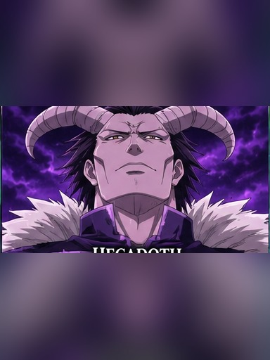

Character overview
A demon soldier associated with Behemoth's forces whose confrontation with the human fighters escalates the story beyond ordinary school rivalry.

Identity & background
Hecadoth is a member of Behemoth's 34th Pillar Squad. His appearance demonstrates the organised military power available to demons and introduces a threat level that the Ishiyama delinquents cannot treat as a normal school fight.
Personality
A hostile and mission-focused antagonist, Hecadoth approaches the human characters as obstacles within a larger demonic conflict. His conduct is defined more by his role as an enemy combatant than by domestic or school relationships.
Abilities & combat
Demon physiology and combat ability, including the use of a weapon in battle. His position within the Pillar Squad indicates training and experience beyond ordinary human delinquents.
Limitations
He can be challenged by the strongest fighters and by opponents who adapt to his methods. His military affiliation does not guarantee victory against Oga's group.
Story chronology
Hecadoth becomes involved as Behemoth's forces move against Oga and the people around Beel. His conflict with the human fighters marks the transition toward larger demon-world battles.
Relationships
Behemoth's 34th Pillar Squad — military affiliation. Oga and his allies — opponents. Beel — the royal prince whose situation is tied to the conflict.
Character analysis
Hecadoth functions as an early demonstration of organised demonic opposition. His role shifts the story's scale from individual delinquents to structured supernatural forces.
Anime & manga continuity
The anime adapts material involving Behemoth and the 34th Pillar Squad, though the manga's later demon conflict continues beyond the television ending.
Archive status
Antagonist in the adapted Behemoth storyline.
Research status: structured starter dossier · Expand with chapter/episode citations during the next verification pass.